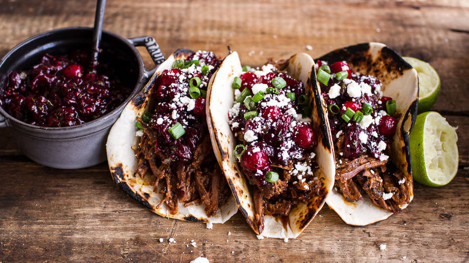

Cuban Taco's
Home

Description
A sweet take on traditional tacos. Although adding cranberry's may sound odd at first, once you try these you will never make normal tacos again.
Ingredients
- 1 lb-ground beef
- Hot taco seasoning packet
- Cranberry sauce
- Craisins
- Molasses
Steps
- Brown 1 lb of ground beef
- Add hot seasoning mix
- Stir in cranberry sauce and molasses to taste
- Add in craisins
- Serve in taco shells and with any toppings you like